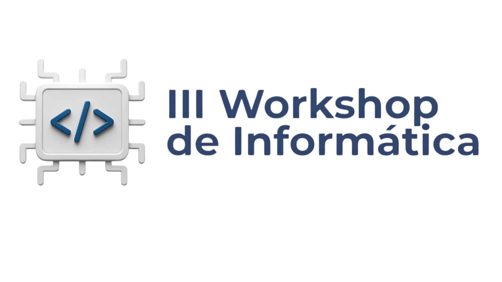
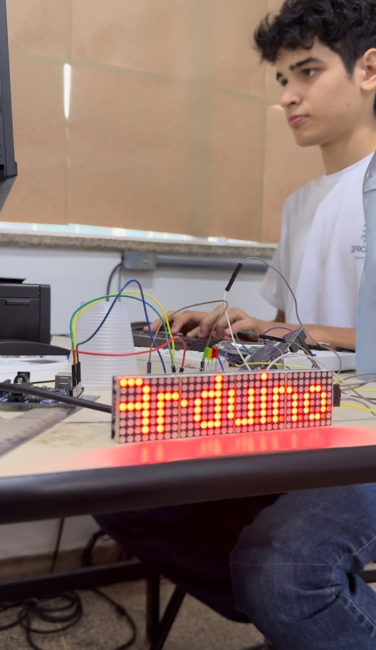
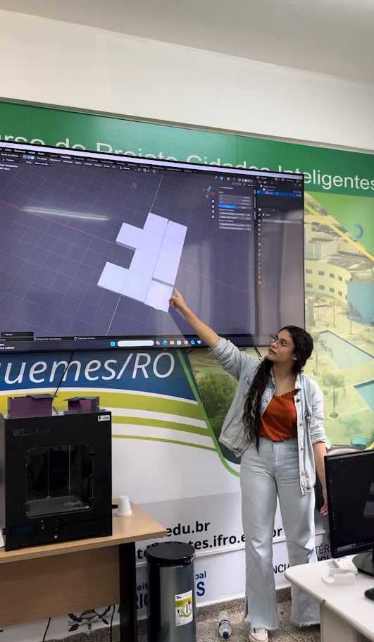
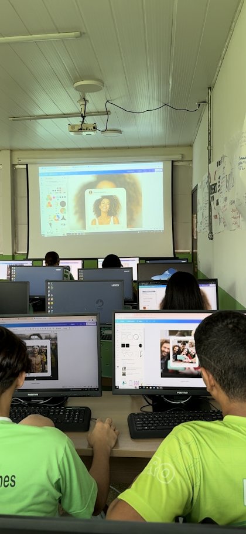
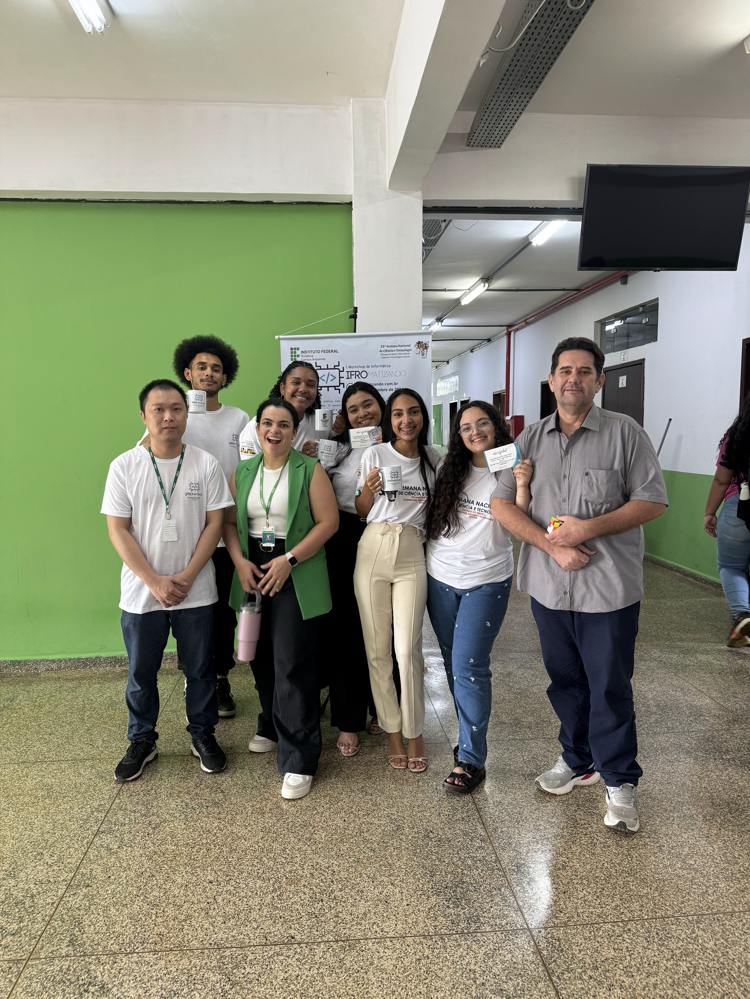

III Workshop de Informática
IFROmatizando

Um dia de oficinas práticas, papo técnico e mão na massa, promovido pelo Instituto Federal de Rondônia · Campus Ariquemes.
Aberto para estudantes e comunidade.
Sobre o evento
O que é o IFROmatizando?
O III Workshop de Informática é o evento anual de tecnologia do Campus Ariquemes, criado por estudantes e professores do curso de Informática para compartilhar conhecimento com a comunidade escolar.
Salas e laboratórios viram oficinas de redes, hardware, inteligência artificial e desenvolvimento web, conduzidas por alunos e convidados.
A programação está organizada por sala e horário: escolha uma oficina por rodada e monte o seu roteiro.
8 locais · 13 atividades programadas
- Data
- Horário
- A partir das 9h
- Local
- IFRO · Campus Ariquemes
Cronograma
Cronograma do evento
Confira a programação completa do IFROmatizando com data, horários, atividades, responsáveis e vagas por local.
| Data | Hora | Duração | Ação | Tema | Responsável | Local | Vagas |
|---|---|---|---|---|---|---|---|
| 29/10 | 13h30 | 4h | Oficina | Montagem de Computadores | Adriana, Caio, Maria Eduarda, Mariana, Fábio, Waiser e Yasmin Moratto | Lab B | 25 |
| 29/10 | 14h | 1h30 | Palestra | As Crônicas do Registro: o código, a arte e o papel | Leandro Gabriel | Miniauditório | 70 |
| 29/10 | 15h | 2h30 | Oficina | Ensino do computador a enxergar: introdução à visão computacional com Python | Camila Santos | Lab A | 35 |
| 29/10 | 16h | 1h30 | Palestra | O futuro na sua mão — automação com Arduino | Arno Douglas | Miniauditório | 70 |
| 30/10 | 08h | 2h | Oficina | Introdução a containers com Docker: padronizando ambientes para consistência em aplicações | Gabriel Oliveira | Lab D | 25 |
| 30/10 | 08h | 4h | Oficina | Introdução ao universo 3D com o Blender | Julia e Ane | PROCINT | 15 |
| 30/10 | 08h | 4h | Oficina | Roblox Studio: fundamentos de criação, lógica e publicação | Natã Frederico e Kauen | Lab A | 35 |
| 30/10 | 10h | 2h | Oficina | Mão na rede — monte, crimpe e conecte! | Sued Policarpo | Sala 01 | 20 |
| 30/10 | 10h | 2h | Oficina | Além do prompt: o que é e Harness Engineering? | Cleyton Ferrari | Miniauditório | 70 |
| 30/10 | 08h | 4h | Oficina | Do zero ao seu primeiro jogo: criando games com GDevelop | Julio Sabaini | Lab E | 20 |
| 30/10 | 08h | 2h | Oficina | Mão na rede — monte, crimpe e conecte! | Sued Policarpo | Sala 01 | 20 |
| 30/10 | 08h | 2h | Oficina | GPU: o que é e para que serve? | Cauã Almeida Camargo, Marco Antônio Bacarin, Henrique Torriani Mezabarba | Sala 02 | 20 |
| 30/10 | 08h | 4h | Oficina | Oficina de robótica com LEGO | Vinicius | Lab B | 20 |
Edições anteriores
Já rolou por aqui
Alguns registros das edições passadas do IFROmatizando.




Inscrição
Garanta sua vaga
Gratuito, pelo formulário oficial do IFRO. As vagas por oficina são limitadas.